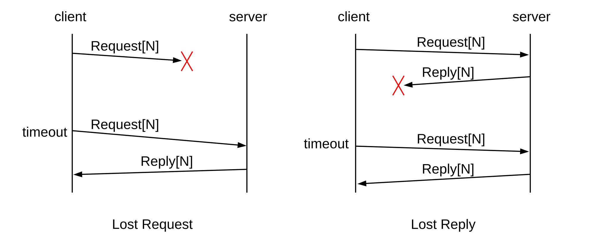

16 UDP Transport¶
The standard transport protocols riding above the IP layer are TCP and UDP. As we saw in Chapter 1, UDP provides simple datagram delivery to remote sockets, that is, to ⟨host,port⟩ pairs. TCP provides a much richer functionality for sending data, but requires that the remote socket first be connected. In this chapter, we start with the much-simpler UDP, including the UDP-based Trivial File Transfer Protocol.
We also review some fundamental issues any transport protocol must address, such as lost final packets and packets arriving late enough to be subject to misinterpretation upon arrival. These fundamental issues will be equally applicable to TCP connections.
16.1 User Datagram Protocol – UDP¶
RFC 1122 refers to UDP as “almost a null protocol”; while that is something of a harsh assessment, UDP is indeed fairly basic. The two features it adds beyond the IP layer are port numbers and a checksum. The UDP header consists of the following:
The port numbers are what makes UDP into a real transport protocol: with them, an application can now connect to an individual server process (that is, the process “owning” the port number in question), rather than simply to a host.
UDP is unreliable, in that there is no UDP-layer attempt at timeouts, acknowledgment and retransmission; applications written for UDP must implement these. As with TCP, a UDP ⟨host,port⟩ pair is known as a socket (though UDP ports are considered a separate namespace from TCP ports). UDP is also unconnected, or stateless; if an application has opened a port on a host, any other host on the Internet may deliver packets to that ⟨host,port⟩ socket without preliminary negotiation.
UDP packets use the 16-bit Internet checksum (7.4 Error Detection) on the data. While it is seldom done today, the checksum can be disabled by setting the checksum field to the all-0-bits value, which never occurs as an actual ones-complement sum. The UDP checksum covers the UDP header, the UDP data and also a “pseudo-IP header” that includes the source and destination IP addresses (and also a duplicate copy of the UDP-header length field). If a NAT router rewrites an IP address or port, the UDP checksum must be updated.
UDP packets can be dropped due to queue overflows either at an intervening router or at the receiving host. When the latter happens, it means that packets are arriving faster than the receiver can process them. Higher-level protocols that define ACK packets (eg UDP-based RPC, below) typically include some form of flow control to prevent this.
UDP is popular for “local” transport, confined to one LAN. In this setting it is common to use UDP as the transport basis for a Remote Procedure Call, or RPC, protocol. The conceptual idea behind RPC is that one host invokes a procedure on another host; the parameters and the return value are transported back and forth by UDP. We will consider RPC in greater detail below, in 16.5 Remote Procedure Call (RPC); for now, the point of UDP is that on a local LAN we can fall back on rather simple mechanisms for timeout and retransmission.
UDP is well-suited for “request-reply” semantics beyond RPC; one can use TCP to send a message and get a reply, but there is the additional overhead of setting up and tearing down a connection. DNS uses UDP, largely for this reason. However, if there is any chance that a sequence of request-reply operations will be performed in short order then TCP may be worth the overhead.
UDP is also popular for real-time transport; the issue here is head-of-line blocking. If a TCP packet is lost, then the receiving host queues any later data until the lost data is retransmitted successfully, which can take several RTTs; there is no option for the receiving application to request different behavior. UDP, on the other hand, gives the receiving application the freedom simply to ignore lost packets. This approach is very successful for voice and video, which are loss-tolerant in that small losses simply degrade the received signal slightly, but delay-intolerant in that packets arriving too late for playback might as well not have arrived at all. Similarly, in a computer game a lost position update is moot after any subsequent update. Loss tolerance is the reason the Real-time Transport Protocol, or RTP, is built on top of UDP rather than TCP. It is common for VoIP telephone calls to use RTP and UDP. See also the NoTCP Manifesto.
There is a dark side to UDP: it is sometimes the protocol of choice in flooding attacks on the Internet, as it is easy to send UDP packets with spoofed source address. See the Internet Draft draft-byrne-opsec-udp-advisory. That said, it is not especially hard to send TCP connection-request (SYN) packets with spoofed source address. It is, however, quite difficult to get TCP source-address spoofing to work for long enough that data is delivered to an application process; see 18.3.1 ISNs and spoofing.
UDP also sometimes enables what are called traffic amplification attacks: the attacker sends a small message to a server, with spoofed source address, and the server then responds to the spoofed address with a much larger response message. This creates a larger volume of traffic to the victim than the attacker would be able to generate directly. One approach is for the server to limit the size of its response – ideally to the size of the client’s request – until it has been able to verify that the client actually receives packets sent to its claimed IP address. QUIC uses this approach; see 18.15.4.4 Connection handshake and TLS encryption.
16.1.1 QUIC¶
Sometimes UDP is used simply because it allows new or experimental protocols to run entirely as user-space applications; no kernel updates are required, as would be the case with TCP changes. Google has created a protocol named QUIC (Quick UDP Internet Connections, chromium.org/quic) in this category, rather specifically to support the HTTP protocol. QUIC can in fact be viewed as a transport protocol specifically tailored to HTTPS: HTTP plus TLS encryption (29.5.2 TLS).
QUIC also takes advantage of UDP’s freedom from head-of-line blocking. For example, one of QUIC’s goals includes supporting multiplexed streams in a single connection (eg for the multiple components of a web page). A lost packet blocks its own stream until it is retransmitted, but the other streams can continue without waiting. An early version of QUIC supported error-correcting codes (7.4.2 Error-Correcting Codes); this is another feature that would be difficult to add to TCP.
In many cases QUIC eliminates the initial RTT needed for setting up a TCP connection, allowing data delivery with the very first packet. This usually this requires a recent previous connection, however, as otherwise accepting data in the first packet opens the recipient up to certain spoofing attacks. Also, QUIC usually eliminates the second (and maybe third) RTT needed for negotiating TLS encryption (29.5.2 TLS).
QUIC provides support for advanced congestion control, currently (2014) including a UDP analog of TCP CUBIC (22.15 TCP CUBIC). QUIC does this at the application layer but new congestion-control mechanisms within TCP often require client operating-system changes even when the mechanism lives primarily at the server end. (QUIC may require kernel support to make use of ECN congestion feedback, 21.5.3 Explicit Congestion Notification (ECN), as this requires setting bits in the IP header.) QUIC represents a promising approach to using UDP’s flexibility to support innovative or experimental transport-layer features.
One downside of QUIC is its nonstandard programming interface, but note that Google can (and does) achieve widespread web utilization of QUIC simply by distributing the client side in its Chrome browser. Another downside, more insidious, is that QUIC breaks the “social contract” that everyone should use TCP so that everyone is on the same footing regarding congestion. It turns out, though, that TCP users are not in fact all on the same footing, as there are now multiple TCP variants (22 Newer TCP Implementations). Furthermore, QUIC is supposed to compete fairly with TCP. Still, QUIC does open an interesting can of worms.
Because many of the specific features of QUIC were chosen in response to perceived difficulties with TCP, we will explore the protocol’s details after introducing TCP, in 18.15.4 QUIC Revisited.
16.1.2 DCCP¶
The Datagram Congestion Control Protocol, or DCCP, is another transport protocol build atop UDP, preserving UDP’s fundamental tolerance to packet loss. It is outlined in RFC 4340. DCCP adds a number of TCP-like features to UDP; for our purposes the most significant are connection setup and teardown (see 18.15.3 DCCP) and TCP-like congestion management (see 21.3.3 DCCP Congestion Control).
DCCP data packets, while numbered, are delivered to the application in order of arrival rather than in order of sequence number. DCCP also adds acknowledgments to UDP, but in a specialized form primarily for congestion control. There is no assumption that unacknowledged data packets will ever be retransmitted; that decision is entirely up to the application. Acknowledgments can acknowledge single packets or, through the DCCP acknowledgment-vector format, all packets received in a range of recent sequence numbers (SACK TCP, 19.6 Selective Acknowledgments (SACK), also supports this).
DCCP does support reliable delivery of control packets, used for connection setup, teardown and option negotiation. Option negotiation can occur at any point during a connection.
DCCP packets include not only the usual application-specific UDP port numbers, but also a 32-bit service code. This allows finer-grained packet handling as it unambiguously identifies the processing requested by an incoming packet. The use of service codes also resolves problems created when applications are forced to use nonstandard port numbers due to conflicts.
DCCP is specifically intended to run in in the operating-system kernel, rather than in user space. This is because the ECN congestion-feedback mechanism (21.5.3 Explicit Congestion Notification (ECN)) requires setting flag bits in the IP header, and most kernels do not allow user-space applications to do this.
16.1.3 UDP Simplex-Talk¶
One of the early standard examples for socket programming is simplex-talk. The client side reads lines of text from the user’s terminal and sends them over the network to the server; the server then displays them on its terminal. The server does not acknowledge anything sent to it, or in fact send any response to the client at all. “Simplex” here refers to the one-way nature of the flow; “duplex talk” is the basis for Instant Messaging, or IM.
Even at this simple level we have some details to attend to regarding the data protocol: we assume here that the lines are sent with a trailing end-of-line marker. In a world where different OS’s use different end-of-line marks, including them in the transmitted data can be problematic. However, when we get to the TCP version, if arriving packets are queued for any reason then the embedded end-of-line character will be the only thing to separate the arriving data into lines.
As with almost every Internet protocol, the server side must select a port number, which with the server’s IP address will form the socket address to which clients connect. Clients must discover that port number or have it written into their application code. Clients too will have a port number, but it is largely invisible.
On the server side, simplex-talk must do the following:
- ask for a designated port number
- create a socket, the sending/receiving endpoint
- bind the socket to the socket address, if this is not done at the point of socket creation
- receive packets sent to the socket
- for each packet received, print its sender and its content
The client side has a similar list:
- look up the server’s IP address, using DNS
- create an “anonymous” socket; we don’t care what the client’s port number is
- read a line from the terminal, and send it to the socket address ⟨server_IP,port⟩
16.1.3.1 The Server¶
We will start with the server side, presented here in Java. The Java socket implementation is based mostly on the BSD socket library, 1.16 Berkeley Unix. We will use port 5432; this can easily be changed if, for example, on startup an error message like “cannot create socket with port 5432” appears. The port we use here, 5432, has also been adopted by PostgreSQL for TCP connections. (The client, of course, would also need to be changed.)
The socket-creation and port-binding operations are combined into the single operation new DatagramSocket(destport). Once created, this socket will receive packets from any host that addresses a packet to it; there is no need for preliminary connection. In the original BSD socket library, a socket is created with socket() and bound to an address with the separate operation bind().
The server application needs no parameters; it just starts. (That said, we could make the port number a parameter, to allow easy change.) The server accepts both IPv4 and IPv6 connections; we return to this below.
Though it plays no role in the protocol, we will also have the server time out every 15 seconds and display a message, just to show how this is done. Implementations of real UDP protocols essentially always must arrange when attempting to receive a packet to time out after a certain interval with no response.
The file below is at udp_stalks.java.
/* simplex-talk server, UDP version */
import java.net.*;
import java.io.*;
public class stalks {
static public int destport = 5432;
static public int bufsize = 512;
static public final int timeout = 15000; // time in milliseconds
static public void main(String args[]) {
DatagramSocket s; // UDP uses DatagramSockets
try {
s = new DatagramSocket(destport);
}
catch (SocketException se) {
System.err.println("cannot create socket with port " + destport);
return;
}
try {
s.setSoTimeout(timeout); // set timeout in milliseconds
} catch (SocketException se) {
System.err.println("socket exception: timeout not set!");
}
// create DatagramPacket object for receiving data:
DatagramPacket msg = new DatagramPacket(new byte[bufsize], bufsize);
while(true) { // read loop
try {
msg.setLength(bufsize); // max received packet size
s.receive(msg); // the actual receive operation
System.err.println("message from <" +
msg.getAddress().getHostAddress() + "," + msg.getPort() + ">");
} catch (SocketTimeoutException ste) { // receive() timed out
System.err.println("Response timed out!");
continue;
} catch (IOException ioe) { // should never happen!
System.err.println("Bad receive");
break;
}
String str = new String(msg.getData(), 0, msg.getLength());
System.out.print(str); // newline must be part of str
}
s.close();
} // end of main
}
16.1.3.2 UDP and IP addresses¶
The server line s = new DatagramSocket(destport) creates a DatagramSocket object bound to the given port. If a host has multiple IP addresses (that is, is multihomed), packets sent to that port to any of those IP addresses will be delivered to the socket, including localhost (and in fact all IPv4 addresses between 127.0.0.1 and 127.255.255.255) and the subnet broadcast address (eg 192.168.1.255). If a client attempts to connect to the subnet broadcast address, multiple servers may receive the packet (in this we are perhaps fortunate that the stalk server does not reply).
Alternatively, we could have used
s = new DatagramSocket(int port, InetAddress local_addr)
in which case only packets sent to the host and port through the host’s specific IP address local_addr would be delivered. It does not matter here whether IP forwarding on the host has been enabled. In the original C socket library, this binding of a port to (usually) a server socket was done with the bind() call. To allow connections via any of the host’s IP addresses, the special IP address INADDR_ANY is passed to bind().
When a host has multiple IP addresses, the BSD socket library and its descendents do not appear to provide a way to find out to which these an arriving UDP packet was actually sent (although it is supposed to, according to RFC 1122, §4.1.3.5). Normally, however, this is not a major difficulty. If a host has only one interface on an actual network (ie not counting loopback), and only one IP address for that interface, then any remote clients must send to that interface and address. Replies (if any, which there are not with stalk) will also come from that address.
Multiple interfaces do not necessarily create an ambiguity either; the easiest such case to experiment with involves use of the loopback and Ethernet interfaces (though one would need to use an application that, unlike stalk, sends replies). If these interfaces have respective IPv4 addresses 127.0.0.1 and 192.168.1.1, and the client is run on the same machine, then connections to the server application sent to 127.0.0.1 will be answered from 127.0.0.1, and connections sent to 192.168.1.1 will be answered from 192.168.1.1. The IP layer sees these as different subnets, and fills in the IP source-address field according to the appropriate subnet. The same applies if multiple Ethernet interfaces are involved, or if a single Ethernet interface is assigned IP addresses for two different subnets, eg 192.168.1.1 and 192.168.2.1.
Life is slightly more complicated if a single interface is assigned multiple IP addresses on the same subnet, eg 192.168.1.1 and 192.168.1.2. Regardless of which address a client sends its request to, the server’s reply will generally always come from one designated address for that subnet, eg 192.168.1.1. Thus, it is possible that a legitimate UDP reply will come from a different IP address than that to which the initial request was sent.
If this behavior is not desired, one approach is to create multiple server sockets, and to bind each of the host’s network IP addresses to a different server socket.
The fact that the IP layer usually chooses the source address adds a slight wrinkle to the discussion of network protocol layers at 1.15 IETF and OSI. The classic “encapsulation” model would suggest that the UDP layer writes the UDP header and then passes the packet (and destination IP address) to the IP layer, which then writes the IP header and passes the packet in turn down to the LAN layer. But this cannot work quite as described, because, if the IP source address is seen as supplied by the IP layer, then would not be available at the time the UDP-header checksum field is first filled in. Checksums are messy, and real implementations simply blur the layering “rules”: typically the UDP layer asks the IP layer for early determination of the IP source address. The situation is further complicated by the fact that nowadays the bulk of the checksum calculation is often performed at the LAN layer, by the LAN hardware; see 17.5 TCP Offloading.
16.1.3.3 The Client¶
Next is the Java client version udp_stalkc.java.
The client – any client – must provide the name of the host to which it wishes to send; as with the port number this can be hard-coded into the application but is more commonly specified by the user. The version here uses host localhost as a default but accepts any other hostname as a command-line argument. The call to InetAddress.getByName(desthost) invokes the DNS system, which looks up name desthost and, if successful, returns an IP address. (InetAddress.getByName() also accepts addresses in numeric form, eg “127.0.0.1”, in which case DNS is not necessary.) When we create the socket we do not designate a port in the call to new DatagramSocket(); this means any port will do for the client. When we create the DatagramPacket object, the first parameter is a zero-length array as the actual data array will be provided within the loop.
A certain degree of messiness is introduced by the need to create a BufferedReader object to handle terminal input.
// simplex-talk CLIENT in java, UDP version
import java.net.*;
import java.io.*;
public class stalkc {
static public BufferedReader bin;
static public int destport = 5432;
static public int bufsize = 512;
static public void main(String args[]) {
String desthost = "localhost";
if (args.length >= 1) desthost = args[0];
bin = new BufferedReader(new InputStreamReader(System.in));
InetAddress dest;
System.err.print("Looking up address of " + desthost + "...");
try {
dest = InetAddress.getByName(desthost); // DNS query
}
catch (UnknownHostException uhe) {
System.err.println("unknown host: " + desthost);
return;
}
System.err.println(" got it!");
DatagramSocket s;
try {
s = new DatagramSocket();
}
catch(IOException ioe) {
System.err.println("socket could not be created");
return;
}
System.err.println("Our own port is " + s.getLocalPort());
DatagramPacket msg = new DatagramPacket(new byte[0], 0, dest, destport);
while (true) {
String buf;
int slen;
try {
buf = bin.readLine();
}
catch (IOException ioe) {
System.err.println("readLine() failed");
return;
}
if (buf == null) break; // user typed EOF character
buf = buf + "\n"; // append newline character
slen = buf.length();
byte[] bbuf = buf.getBytes();
msg.setData(bbuf);
msg.setLength(slen);
try {
s.send(msg);
}
catch (IOException ioe) {
System.err.println("send() failed");
return;
}
} // while
s.close();
}
}
The default value of desthost here is localhost; this is convenient when running the client and the server on the same machine, in separate terminal windows.
All packets are sent to the ⟨dest,destport⟩ address specified in the initialization of msg. Alternatively, we could have called s.connect(dest,destport). This causes nothing to be sent over the network, as UDP is connectionless, but locally marks the socket s allowing it to send only to ⟨dest,destport⟩. In Java we still have to embed the destination address in every DatagramPacket we send(), so this offers no benefit, but in other languages this can simplify subsequent sending operations.
Like the server, the client works with both IPv4 and IPv6. The InetAddress object dest in the server code above can hold either IPv4 or IPv6 addresses; InetAddress is the base class with child classes Inet4Address and Inet6Address. If the client and server can communicate at all via IPv6 and if the value of desthost supplied to the client is an IPv6-only name, then dest will be an Inet6Address object and IPv6 will be used.
For example, if the client is invoked from the command line with java stalkc ip6-localhost, and the name ip6-localhost resolves to the IPv6 loopback address ::1, the client will send its packets to an stalk server on the same host using IPv6 (and the loopback interface).
If greater IPv4-versus-IPv6 control is desired, one can replace the getByName() call with the following, where dests now has type InetAddress[]:
dests = InetAddress.getAllByName(desthost);
This returns an array of all addresses associated with the given name. One can then find the IPv6 addresses by searching this array for addresses addr for which addr instanceof Inet6Address.
For non-Java languages, IP-address objects often have an AddressFamily attribute that can be used to determine whether an address is IPv4 or IPv6. See also 12.4 Using IPv6 and IPv4 Together.
Finally, here is a simple python version of the client, udp_stalkc.py.
#!/usr/bin/python3
from socket import *
from sys import argv
portnum = 5432
def talk():
rhost = "localhost"
if len(argv) > 1:
rhost = argv[1]
print("Looking up address of " + rhost + "...", end="")
try:
dest = gethostbyname(rhost)
except (GAIerror, herror) as mesg: # GAIerror: error in gethostbyname()
errno,errstr=mesg.args
print("\n ", errstr);
return;
print("got it: " + dest)
addr=(dest, portnum) # a socket address
s = socket(AF_INET, SOCK_DGRAM)
s.settimeout(1.5) # we don't actually need to set timeout here
while True:
try:
buf = input("> ")
except:
break
s.sendto(bytes(buf + "\n", 'ascii'), addr)
talk()
To experiment with these on a single host, start the server in one window and one or more clients in other windows. One can then try the following:
- have two clients simultaneously running, and sending alternating messages to the same server
- invoke the client with the external IP address of the server in dotted-decimal, eg 10.0.0.3 (note that
localhostis 127.0.0.1) - run the java and python clients simultaneously, sending to the same server
- run the server on a different host (eg a virtual host or a neighboring machine)
- invoke the client with a nonexistent hostname
One can also use netcat, below, as a client, though netcat as a server will not work for the multiple-client experiments.
Note that, depending on the DNS server, the last one may not actually fail. When asked for the DNS name of a nonexistent host such as zxqzx.org, many ISPs will return the IP address of a host running a web server hosting an error/search/advertising page (usually their own). This makes some modicum of sense when attention is restricted to web searches, but is annoying if it is not, as it means non-web applications have no easy way to identify nonexistent hosts.
Simplex-talk will work if the server is on the public side of a NAT firewall. No server-side packets need to be delivered to the client! But if the other direction works, something is very wrong with the firewall.
16.1.4 netcat¶
The versatile netcat utility (also sometimes spelled nc) utility enables sending and receiving of individual UDP (and TCP) packets; we can use it to substitute for the stalk client, or, with a limitation, the server. (The netcat utility, unlike stalk, supports bidirectional communication.)
The netcat utility is available for Windows, Linux and Macintosh systems, in both binary and source forms, from a variety of places and in something of a variety of versions. The classic version is available from sourceforge.net/projects/nc110; a newer implementation is ncat. The Wikipedia page has additional information.
As with stalk, netcat sends the final end-of-line marker along with its data. The -u flag is used to request UDP. To send to port 5432 on localhost using UDP, like an stalk client, the command is
netcat -u localhost 5432
One can then type multiple lines that should all be received by a running stalk server. If desired, the source port can be specified with the -p option; eg netcat -u -p 40001 localhost 5432.
To act as an stalk server, we need the -l option to ask netcat to listen instead of sending:
netcat -l -u 5432
One can then send lines using stalkc or netcat in client mode. However, once netcat in server mode receives its first UDP packet, it will not accept later UDP packets from different sources (some versions of netcat have a -k option to allow this for TCP, but not for UDP). (This situation arises because netcat makes use of the connect() call on the server side as well as the client, after which the server can only send to and receive from the socket address to which it has connected. This simplifies bidirectional communication. Often, UDP connect() is called only by the client, if at all. See the paragraph about connect() following the Java stalkc code in 16.1.3.3 The Client.)
16.1.5 Binary Data¶
In the stalk example above, the client sent strings to the server. However, what if we are implementing a protocol that requires us to send binary data? Or designing such a protocol? The client and server will now have to agree on how the data is to be encoded.
As an example, suppose the client is to send to the server a list of 32-bit integers, organized as follows. The length of the list is to occupy the first two bytes; the remainder of the packet contains the consecutive integers themselves, four bytes each, as in the diagram:
The client needs to create the byte array organized as above, and the server needs to extract the values. (The inclusion of the list length as a short int is not really necessary, as the receiver will be able to infer the list length from the packet size, but we want to be able to illustrate the encoding of both int and short int values.)
The protocol also needs to define how the integers themselves are laid out. There are two common ways to represent a 32-bit integer as a sequence of four bytes. Consider the integer 0x01020304 = 1×2563 + 2×2562 + 3×256 + 4. This can be encoded as the byte sequence [1,2,3,4], known as big-endian encoding, or as [4,3,2,1], known as little-endian encoding; the former was used by early IBM mainframes and the latter is used by most Intel processors. (We are assuming here that both architectures represent signed integers using twos-complement; this is now universal but was not always.)
To send 32-bit integers over the network, it is certainly possible to tag the data as big-endian or little-endian, or for the endpoints to negotiate the encoding. However, by far the most common approach on the Internet – at least below the application layer – is to follow the convention of RFC 1700 and use big-endian encoding exclusively; big-endian encoding has since come to be known as “network byte order”.
How one converts from “host byte order” to “network byte order” is language-dependent. It must always be done, even on big-endian architectures, as code may be recompiled on a different architecture later.
In Java the byte-order conversion is generally combined with the process of conversion from int to byte[]. The client will use a DataOutputStream class to support the writing of the binary values to an output stream, through methods such as writeInt() and writeShort(), together with a ByteArrayOutputStream class to support the conversion of the output stream to type byte[]. The code below assumes the list of integers is initially in an ArrayList<Integer> named theNums.
ByteArrayOutputStream baos = new ByteArrayOutputStream();
DataOutputStream dos = new DataOutputStream(baos);
try {
dos.writeShort(theNums.size());
for (int n : theNums) {
dos.writeInt(n);
}
} catch (IOException ioe) { /* exception handling */ }
byte[] bbuf = baos.toByteArray();
msg.setData(bbuf); // msg is the DatagramPacket object to be sent
The server then needs to to the reverse; again, msg is the arriving DatagramPacket. The code below simply calculates the sum of the 32-bit integers in msg:
ByteArrayInputStream bais = new ByteArrayInputStream(msg.getData(), 0, msg.getLength());
DataInputStream dis = new DataInputStream(bais);
int sum = 0;
try {
int count = dis.readShort();
for (int i=0; i<count; i++) {
sum += dis.readInt();
}
} catch (IOException ioe) { /* more exception handling */ }
A version of simplex-talk for lists of integers can be found in client saddc.java and server sadds.java. The client reads from the command line a list of character-encoded integers (separated by whitespace), constructs the binary encoding as above, and sends them to the server; the server prints their sum. Port 5434 is used; this can be changed if necessary.
In the C language, we can simply allocate a char[] of the appropriate size and write the network-byte-order values directly into it. Conversion to network byte order and back is done with the following library calls:
htonl(): host-to-network conversion for long (32-bit) integersntohl(): network-to-host conversion for long integershtons(): host-to-network conversion for short (16-bit) integersntohs(): network-to-host conversion for short integers
A certain amount of casting between int * and char * is also necessary. As both casting and byte-order conversions are error-prone, it is best if all conversions are made in a block, just after a packet arrives or just before it is sent, rather than on demand throughout the program.
In general, the designer of a protocol needs to select an unambiguous format for all binary data; protocol-defining RFCs always include such format details. This can be a particular issue for floating-point data, for which two formats can have the same endianness but still differ, eg in normalization or the size of the exponent field. Formats for structured data, such as arrays, must also be spelled out; in the example above the list size was indicated by a length field but other options are possible.
The example above illustrates fixed-field-width encoding. Another possible option, using variable-length encoding, is ASN.1 using the Basic Encoding Rules (26.6 ASN.1 Syntax and SNMP); fixed-field encoding sometimes becomes cumbersome as data becomes more hierarchical.
At the application layer, the use of non-binary encodings is common, though binary encodings continue to remain common as well. Two popular formats using human-readable unicode strings for data encoding are ASN.1 with its XML Encoding Rules and JSON. While the latter format originated with JavaScript, it is now widely supported by many other languages.
16.2 Trivial File Transport Protocol, TFTP¶
We now introduce a real protocol based on UDP: the Trivial File Transport Protocol, or TFTP. While TFTP supports file transfers in both directions, we will restrict attention to the more common case where the client requests a file from the server. TFTP does not support a mechanism for authentication; any requestable files are available to anyone. In this TFTP does not differ from basic web browsing; as with web servers, a TFTP file server must ensure that requests are disallowed if the file – for example ../../../etc/passwd – is not within a permitted directory.
Because TFTP is UDP-based, and clients can be implemented very compactly, it is well-suited to the downloading of startup files to very compact systems, including diskless systems. Because it uses stop-and-wait, often uses a fixed timeout interval, and offers limited security, TFTP is typically confined to internal use within a LAN.
Although TFTP is a very simple protocol, for correct operation it must address several fundamental transport issues; these are discussed in detail in the following section. TFTP is presented here partly as a way to introduce these transport issues; we will later return to these same issues in the context of TCP (18.4 Anomalous TCP scenarios).
TFTP, documented first in RFC 783 and updated in RFC 1350, has five packet types:
- Read ReQuest, RRQ, containing the filename and a text/binary indication
- Write ReQuest, WRQ
- Data, containing a 16-bit block number and up to 512 bytes of data
- ACK, containing a 16-bit block number
- Error, for certain designated errors. All errors other than “Unknown Transfer ID” are cause for sender termination.
Data block numbering begins at 1; we will denote the packet with the Nth block of data as Data[N]. Acknowledgments contain the block number of the block being acknowledged; thus, ACK[N] acknowledges Data[N]. All blocks of data contain 512 bytes except the final block, which is identified as the final block by virtue of containing less than 512 bytes of data. If the file size was divisible by 512, the final block will contain 0 bytes of data. TFTP block numbers are 16 bits in length, and are not allowed to wrap around.
Because TFTP uses UDP (as opposed to TCP) it must take care of packetization itself, and thus must choose a block size small enough to avoid fragmentation (9.4 Fragmentation). While negotiation of the block size would have been possible, as is done by TCP’s 18.6 Path MTU Discovery, it would have added considerable complexity.
The TFTP server listens on UDP port 69 for arriving RRQ packets (and WRQ, though we will not consider those here). For each RRQ requesting a valid file, TFTP server implementations almost always create a separate process (or thread) to handle the transfer. That child process will then obtain an entirely new UDP port, which will be used for all further interaction with the client, at least for this particular transfer.
As we shall see below, this port change has significant functional implications in preventing old-duplicate packets, though for now we can justify it as making the implementer’s life much easier. With the port change, the server child process responsible for the transfer has to interact with only one client; all arriving packets must have come from the client for which the child process was created (while it is possible for stray packets to arrive from other endpoints, the child process can ignore them). Without the port change, on the other hand, handling multiple concurrent transfers would be decidedly complicated: the server would have to sort out, for each arriving packet, which transfer it belonged to. Each transfer would have its own state information including block number, open file, and the time of the last successful packet. The port-change rule does have the drawback of preventing the use of TFTP through NAT firewalls.
In the absence of packet loss or other errors, TFTP file requests typically proceed as follows:
- The client sends a RRQ to server port 69.
- The server creates a child process, which obtains a new port, s_port, from the operating system.
- The server child process sends Data[1] from s_port.
- The client receives Data[1], and thus learns the value of s_port. The client will verify that each future Data[N] arrives from this same port.
- The client sends ACK[1] (and all future ACKs) to the server’s s_port.
- The server child process sends Data[2], etc, each time waiting for the client ACK[N] before sending Data[N+1].
- The transfer process stops when the server sends its final block, of size less than 512 bytes, and the client sends the corresponding ACK.
We will refer to the client’s learning of s_port in step 3 as latching on to that port. Here is a diagram; the server child process (with new port s_port) is represented by the blue line at right.
We turn next to the complications introduced by taking packet losses and reordering into account.
16.3 Fundamental Transport Issues¶
The possibility of lost or delayed packets introduces several fundamental issues that any transport strategy must handle correctly for proper operation; we will revisit these in the context of TCP in 18.4 Anomalous TCP scenarios. The issues we will consider include
- old duplicate packets
- lost final ACK
- duplicated connection request
- reboots
In this section we will discuss these issues both in general and in particular how TFTP takes them into account.
16.3.1 Old Duplicate Packets¶
Perhaps the trickiest issue is old duplicate packets: packets from the past arriving quite late, but which are mistakenly accepted as current.
For a TFTP example, suppose the client chooses port 2000 and requests file “foo”, and the server then chooses port 4000 for its child process. During this transfer, Data[2] gets duplicated (perhaps through timeout and retransmission) and one of the copies is greatly delayed. The other copy arrives on time, though, and the transfer concludes.
Now, more-or-less immediately after, the client initiates a second request, this time for file “bar”. Fatefully, the client again chooses port 2000 and the server child process again chooses port 4000.
At the point in the second transfer when the client is waiting for Data[2] from file “bar”, we will suppose the old-duplicate Data[2] from file “foo” finally shows up. There is nothing in the packet to indicate anything is amiss: the block number is correct, the destination port of 4000 ensures delivery to the current server child process, and the source port of 2000 makes the packet appear to be coming from the current client. The wrong Data[2] is therefore accepted as legitimate, and the file transfer is corrupted.
An old packet from a previous instance of the connection, as described above, is called an external old duplicate. An essential feature of the external case is that the connection is closed and then reopened a short time later, using the same port numbers at each end. As a connection is often defined by its endpoint port numbers (more precisely, its socket addresses), we refer to “reopening” the connection even if the second instance is completely unrelated. Two separate instances of a connection between the same socket addresses are sometimes known as incarnations of the connection, particularly in the context of TCP.
Old duplicates can also be internal, from an earlier point in the same connection instance. For example, if TFTP allowed its 16-bit block numbers to wrap around, then a very old Data[3] might be accepted in lieu of Data[3+216]. Internal old duplicates are usually prevented – or rendered improbable – by numbering the data, either by block or by byte, and using sufficiently many bits that wrap-around is unlikely. TFTP prevents internal old duplicates simply by not allowing its 16-bit block numbers to wrap around; this is effective, but limits the maximum file to 512B × (216−1), or about 32 MB. If we were not concerned with old duplicates, TFTP’s stop-and-wait could make do with 1-bit sequence numbers (8.5 Exercises, exercise 8.5).
TFTP’s defense against external old duplicates is based on requiring that both endpoints try to choose a different port for each separate transfer (RFC 1350 states that each side should choose its port number “randomly”). As long as either endpoint succeeds in choosing a new port, external old duplicates cannot interfere; see exercise 7.0. If ports are chosen at random, the probability that both sides will chose the same pair of ports for the subsequent connection is around 1/232; if ports are assigned by the operating system, there is an implicit assumption that the OS will not reissue the same port twice in rapid succession. If a noncompliant implementation on one side reuses its port numbers, TFTP transfers are protected as long as the other side chooses a new port, though the random probability of failure rises to 1/216. Note that this issue represents a second, more fundamental reason for having the server choose a new port for each transfer, unrelated to making the implementer’s life easier.
After enough time, port numbers will eventually be recycled, but we will assume old duplicates have a much smaller lifetime.
Both the external and internal old-duplicate scenarios assume that the old duplicate was sent earlier, but was somehow delayed in transit for an extended period of time, while later packets were delivered normally. Exactly how this might occur remains unclear; perhaps the least far-fetched scenario is the following:
- A first copy of the old duplicate was sent
- A routing error occurs; the packet is stuck in a routing loop
- An alternative path between the original hosts is restored, and the packet is retransmitted successfully
- Some time later, the packet stuck in the routing loop is released, and reaches its final destination
Another scenario involves a link in the path that supplies link-layer acknowledgment: the packet was sent once across the link, the link-layer ACK was lost, and so the packet was sent again. Some mechanism is still needed to delay one of the copies.
Most solutions to the old-duplicate problem assume some cap on just how late an old duplicate can be. In practical terms, TCP officially once took this time limit to be 60 seconds, but implementations now usually take it to be 30 seconds. Other protocols often implicitly adopt the TCP limit. Once upon a time, IP routers were expected to decrement a packet’s TTL field by 1 for each second the router held the packet in its queue; in such a world, IP packets cannot be more than 255 seconds old.
It is also possible to prevent external old duplicates by including a connection count parameter in the transport or application header. For each consecutive connection, the connection count is incremented by (at least) 1. A separate connection-count value must be maintained by each side; if a connection-count value is ever lost, a suitable backup mechanism based on delay might be used. As an example, see 18.5 TCP Faster Opening.
16.3.2 Lost Final ACK¶
In most protocols, most packets will be acknowledged. The final packet (almost always an ACK), however, cannot itself be acknowledged, as then it would not be the final packet. Somebody has to go last. This leaves some uncertainty on the part of the sender: did the last packet make it through, or not?
In the TFTP setting, suppose the server sends the final packet, Data[3]. The client receives it and sends ACK[3], and then exits as the transfer is done; however, the ACK[3] is lost.
The server will eventually time out and retransmit Data[3] again. However, the client is no longer there to receive the packet! The server will continue to timeout and retransmit the final Data packet until it gives up; it will never receive confirmation that the transfer succeeded.
More generally, if A sends a message to B and B replies with an acknowledgment that is delivered to A, then A and B both are both certain the message has been delivered successfully. B is not sure, however, that A knows this.
An alternative formulation of the lost-final-ACK problem is the two-generals problem. Two generals wish to agree on a time to attack, by exchanging messages. However, the generals must attack together, or not at all. Because some messages may be lost, neither side can ever be completely sure of the agreement. If the generals are Alice and Bob (28.5.1 Alice and Bob), the messages might look like this:
- Alice sends: Attack at noon
- Bob replies: Agreed (ie ACK)
After Bob receives Alice’s message, both sides know that a noon attack has been proposed. After Bob’s reply reaches Alice, both sides know that the message has been delivered. If Alice’s message was an order to Bob, this would be sufficient.
But if Alice and Bob must cooperate, this is not quite enough: at the end of the exchange above, Bob does not know that Alice has received his reply; Bob might thus hesitate, fearing Alice might not know he’s on board. Alice, aware of this possibility, might hesitate herself.
Alice might attempt to resolve this by acknowledging Bob’s ACK:
- Alice replies: Ok, we’re agreed on noon
But at this point Alice does not know if Bob has received this message. If Bob does not, Bob might still hesitate. Not knowing, Alice too might hesitate. There is no end. See [AEH75].
Mathematically, there is no perfect solution to the two-generals problem; the generals can never be certain they are in complete agreement to attack. Suppose, to the contrary, that a sequence of messages did bring certainty of agreement to both Alice and Bob. Let M1, …, Mn be the shortest possible such sequence; without loss of generality we may assume Alice sent Mn. Now consider what happens if this final message is lost. From Alice’s perspective, there is no change at all, so Alice must still be certain Bob has agreed. However, the now-shorter sequence M1, …, Mn-1 cannot also bring certainty to Bob, as this sequence has length less than n, the supposed minimum here. So Bob is not certain, and so Alice’s certainty is misplaced.
In engineering terms, however, the probability of a misunderstanding can often be made vanishingly small. Typically, if Alice does not receive Bob’s reply promptly, she will resend her message at regular timeout intervals, until she does receive an ACK. If Bob can count on this behavior, he can be reasonably sure that one of his ACKs must have made it back after enough time has elapsed.
For example, if Bob knows Alice will try a total of six times if she does not receive a response, and Bob only receives Alice’s first two message instances, the fact that Alice appears to have stopped repeating her transmissions is reasonable evidence that she has received Bob’s response. Alternatively, if each message/ACK pair has a 10% probability of failure, and Bob knows that Alice will retry her message up to six times over the course of a day, then by the end of the day Bob can conclude that the probability that all six of his ACKs failed is at most (0.1)6, or one in a million. It is not necessary in this case that Bob actually keep count of Alice’s retry attempts.
For a TCP example, see 17 TCP Transport Basics, exercise 4.0.
TFTP addresses the lost-final-ACK problem by recommending (though not requiring) that the receiver enter into a DALLY state when it has sent the final ACK. In this state, the receiver responds only to duplicates of the final DATA packet; its response is to retransmit the final ACK. While one lost final ACK is possible, multiple such losses are unlikely; sooner or later the sender should receive the final ACK and will then exit.
The dally state will expire after an interval. This interval should be at least twice the sender’s timeout interval, allowing for the sender to make three tries with the final data packet in all. Note that the receiver has no direct way to determine the sender’s timeout value. Note also that dallying only provides increased assurance, not certainty: it is possible that all final ACKs were lost.
The TCP analogue of dallying is the TIMEWAIT state (18.2 TIMEWAIT), though TIMEWAIT also has another role related to prevention of old duplicates.
16.3.3 Duplicated Connection Request¶
We would also like to be able to distinguish between duplicated (eg retransmitted) connection requests and close but separate connection requests, especially when the second of two separate connection requests represents the cancellation of the first. Here is an outline in TFTP terms of the scenario we are trying to avoid:
- The client sends RRQ(“foo”)
- The client changes its mind, or aborts, or reboots, or whatever
- The client sends RRQ(“bar”)
- The server responds with Data[1] from the first RRQ, that is, with file “foo”, while the client is expecting file “bar”
In correct TFTP operation, it is up to the client to send the second RRQ(“bar”) from a new port. As long as the client does that, changing its mind is not a problem. The server might end up sending Data[1] for file “foo” off into the void – that is, to the first client port – until it times out, as TFTP doesn’t have a cancellation message exactly. But the request for file “bar” should succeed normally. One minor issue is that, when a TFTP application terminates, it may not have preserved anywhere a record of the port it used last, and so may be unable to guarantee that a new port is different from those used previously. But both strategies of 16.3.1 Old Duplicate Packets – choosing a port number at random, and having the operating system assign one – are quite effective here.
TFTP does run into a somewhat unexpected issue, however, when the client sends a duplicate RRQ; typically this happens when the first RRQ times out. It is certainly possible to implement a TFTP server so as to recognize that the second RRQ is a duplicate, perhaps by noting that it is from the same client socket address and contains the same filename. In practice, however, this is incompatible with the simplified implementation approach of 16.2 Trivial File Transport Protocol, TFTP in which the server starts a new child process for each RRQ received.
What most TFTP server implementations do in this case is to start two sender processes, one for each RRQ received, from two ports s_port1 and s_port2. Both will send Data[1] to the receiver. The receiver is expected to “latch on” to the port of the first Data[1] packet it receives, recording its source port. The second Data[1] will now appear to be from an incorrect port. The TFTP specification requires that a receiver reply to any packets from an unknown port by sending an ERROR packet with the code “Unknown Transfer ID” (where “Transfer ID” means “port number”); this causes the sender process that sent the later-arriving Data[1] to shut down. The sender process that sent the winning Data[1] will continue normally. Were it not for this duplicate-RRQ scenario, packets from an unknown port could probably be simply ignored.
It is theoretically possible for a malicious actor on the LAN to take advantage of this TFTP “latching on” behavior to hijack anticipated RRQs. If the actor is aware that host C is about to request a file via TFTP, it might send repeated copies of bad Data[1] to likely ports on C. When C does request a file, it may receive the malicious file instead of what it asked for. Because the malicious application must guess the client’s port number, though, this scenario appears to be of limited importance. However, many diskless devices do load a boot file on startup via TFTP, and may do so from a predictable port number.
16.3.4 Reboots¶
Any ongoing communications protocol has to take into account the possibility that one side may reboot in between messages from the other side. The primary issue is detection of the reboot, so the other side can close the now-broken connection.
If the sending side of a TFTP connection reboots, packet exchange simply stops, assuming a typical receiver that does not retransmit on timeouts. If the receiving side reboots, the sender will continue to send data packets, but will receive no further acknowledgments. In most cases, the newly rebooted client will simply ignore them.
The second issue with reboots is that the rebooting system typically loses all memory of what ports it has used recently, making it difficult to ensure that it doesn’t reuse recently active ports. This leads to some risk of old duplicates.
Here is a scenario, based on the one at the start of the previous section, in which a client reboot leads to receipt of the wrong file. Suppose the client sends RRQ(“foo”), but then reboots before sending ACK[1]. After reboot, the client then sends RRQ(“bar”), from the same port; after the reboot the client will be unable to guarantee not reopening a recently used port. The server, having received the RRQ(“foo”), belatedly proceeds to send Data[1] for “foo”. The client latches on to this, and accepts file “foo” while believing it is receiving file “bar”.
In practical terms, this scenario seems to be of limited importance, though “diskless” devices often do use TFTP to request their boot image file when restarting, and so might be potential candidates.
16.4 Other TFTP notes¶
We now take a brief look at other aspects of TFTP unrelated to the fundamental transport issues above. We include a brief outline of an implementation.
16.4.1 TFTP and the Sorcerer¶
TFTP uses a very straightforward implementation of stop-and-wait (8.1 Building Reliable Transport: Stop-and-Wait). Acknowledgment packets contain the block number of the data packet being acknowledged; that is, ACK[N] acknowledges Data[N].
In the original RFC 783 specification, TFTP was vulnerable to the Sorcerer’s Apprentice bug (8.1.2 Sorcerer’s Apprentice Bug). Correcting this problem was the justification for updating the protocol in RFC 1350, eleven years later. The omnibus hosts-requirements document RFC 1123 (referenced by RFC 1350) describes the necessary change this way:
Implementations MUST contain the fix for this problem: the sender (ie, the side originating the DATA packets) must never resend the current DATA packet on receipt of a duplicate ACK.
16.4.2 TFTP States¶
The TFTP specification is relatively informal; more recent protocols are often described using finite-state terminology. In each allowable state, such a specification spells out the appropriate response to all packets. We can apply this approach to TFTP as well.
Above we defined a DALLY state, for the receiver only, with a specific response to arriving Data[N] packets. There are two other important conceptual states for TFTP receivers, which we might call UNLATCHED and ESTABLISHED.
When the receiver-client first sends RRQ, it does not know the port number from which the sender will send packets. We will call this state UNLATCHED, as the receiver has not “latched on” to the correct port. In this state, the receiver waits until it receives a packet from the sender that looks like a Data[1] packet; that is, it is from the sender’s IP address, it has a plausible length, it is a DATA packet, and its block number is 1. When this packet is received, the receiver records s_port, and enters the ESTABLISHED state.
Once in the ESTABLISHED state, the receiver verifies for all packets that the source port number is s_port. If a packet arrives from some other port, the receiver sends back to its source an ERROR packet with “Unknown Transfer ID”, but continues with the original transfer.
Here is an outline, in java, of what part of the TFTP receiver source code might look like; the code here handles the ESTABLISHED state. Somewhat atypically, the code here times out and retransmits ACK packets if no new data is received in the interval TIMEOUT; generally timeouts are implemented only at the TFTP sender side. Error processing is minimal, though error responses are sent in response to packets from the wrong port as described in the previous section. For most of the other error conditions checked for, there is no defined TFTP response.
The variables state, sendtime, TIMEOUT, thePacket, theAddress, thePort, blocknum and expected_block would need to have been previously declared and initialized; sendtime represents the time the most recent ACK response was sent. Several helper functions, such as getTFTPOpcode() and write_the_data(), would have to be defined. The remote port thePort would be initialized at the time of entry to the ESTABLISHED state; this is the port from which a packet must have been sent if it is to be considered valid. The loop here transitions to the DALLY state when a packet marking the end of the data has been received.
// TFTP code for ESTABLISHED state
while (state == ESTABLISHED) {
// check elapsed time
if (System.currentTimeMillis() > sendtime + TIMEOUT) {
retransmit_most_recent_ACK()
sendtime = System.currentTimeMillis()
// receive the next packet
try {
s.receive(thePacket);
}
catch (SocketTimeoutException stoe) { continue; } // try again
catch (IOException ioe) { System.exit(1); } // other errors
if (thePacket.getAddress() != theAddress) continue;
if (thePacket.getPort() != thePort) {
send_error_packet(...); // Unknown Transfer ID; see text
continue;
}
if (thePacket.getLength() < TFTP_HDR_SIZE) continue; // TFTP_HDR_SIZE = 4
opcode = thePacket.getData().getTFTPOpcode()
blocknum = thePacket.getData().getTFTPBlock()
if (opcode != DATA) continue;
if (blocknum != expected_block) continue;
write_the_data(...);
expected_block ++;
send_ACK(...); // and save it too for possible retransmission
sendtime = System.currentTimeMillis();
datasize = thePacket.getLength() - TFTP_HDR_SIZE;
if (datasize < MAX_DATA_SIZE) state = DALLY; // MAX_DATA_SIZE = 512
}
Note that the check for elapsed time is quite separate from the check for the SocketTimeoutException. It is possible for the receiver to receive a steady stream of “wrong” packets, so that it never encounters a SocketTimeoutException, and yet no “good” packet arrives and so the receiver must still arrange (as above) for a timeout and retransmission.
16.4.3 TFTP Throughput¶
On a single physical Ethernet, the TFTP sender and receiver would alternate using the channel, with very little “turnaround” time; the effective throughput would be close to optimal.
As soon as the store-and-forward delays of switches and routers are introduced, though, stop-and-wait becomes a performance bottleneck. Suppose that the path from sender A to receiver B passes through two switches: A—S1—S2—B, and that on all three links only the bandwidth delay is significant. Because ACK packets are so much smaller than DATA packets, we can effectively ignore the ACK travel time from B to A.
With these assumptions, the throughput is about a third of the underlying bandwidth. This is because only one of the three links can be active at any given time; the other two must be idle. We could improve throughput threefold by allowing A to send three packets at a time:
- packet 1 from A to S1
- packet 2 from A to S1 while packet 1 goes from S1 to S2
- packet 3 from A to S1 while packet 2 goes from S1 to S2 and packet 1 goes from S2 to B
This amounts to sliding windows with a winsize of three. TFTP does not support this; in the next chapter we study TCP, which does.
16.5 Remote Procedure Call (RPC)¶
A very different communications model, usually but not always implemented over UDP, is that of Remote Procedure Call, or RPC. The name comes from the idea that a procedure call is being made over the network; host A packages up a request, with parameters, and sends it to host B, which returns a reply. The term request/reply protocol is also used for this. The side making the request is known as the client, and the other side the server.
One common example is that of DNS: a host sends a DNS lookup request to its DNS server, and receives a reply. Other examples include password verification, system information retrieval, database queries and file I/O (below). RPC is also quite successful as the mechanism for interprocess communication within CPU clusters, perhaps its most time-sensitive application.
While TCP can be used for processes like these, this adds the overhead of creating and tearing down a connection; in many cases, the RPC exchange consists of nothing further beyond the request and reply and so the TCP overhead would be nontrivial. RPC over UDP is particularly well suited for transactions where both endpoints are quite likely on the same LAN, or are otherwise situated so that packet losses are negligible.
One issue with the use of UDP is that any desired acknowledgements have to be implemented within the RPC layer. This is not terribly difficult; usually the reply serves to acknowledge the request, and all that is needed is another ACK after that. If the protocol is run over a LAN, it is reasonable to use a static timeout period, perhaps somewhere in the range of 0.5 to 1.0 seconds. The diagram below includes an ACK.
Perhaps surprisingly, some RPC protocols omit the final ACK; see 16.5.2 Sun RPC below. At a minimum, not having a final ACK means that if the reply is lost, the client has to start the sequence over, and the reply has to be regenerated from scratch.
It is essential that requests and replies be numbered (or otherwise identified), so that the client can determine which reply matches which request. This also means that the reply can serve to acknowledge the request; if reply[N] is not received; the requester retransmits request[N]. This can happen either if request[N] never arrived, or if it was reply[N] that got lost:

When the server creates reply[N] and sends it to the client, it must also keep a cached copy of the reply, until such time as ACK[N] is received.
After sending reply[N], the server may receive ACK[N], indicating all is well, or may receive request[N] again, indicating that reply[N] was lost, or may experience a timeout, indicating that either reply[N] or ACK[N] was lost. In the latter two cases, the server should retransmit reply[N] and wait again for ACK[N].
Finally, let us suppose that the server host delivers to its request-processing application the first copy of each request[N] to arrive, and that neither side crashes (or otherwise loses state in the middle of any one request/reply/ACK sequence). Let us also assume that no packet reordering occurs, and every request[N], reply[N] or ACK[N], retransmitted often enough, eventually makes it to its destination. We then have exactly-once semantics: while requests may be transmitted multiple times, they are processed (or “executed”) once and only once.
16.5.1 Network File System¶
In terms of total packet volume, the application making the greatest use of early RPC was Sun’s Network File System, or NFS; this allowed for a filesystem on the server to be made available to clients. When the client opened a file, the server would send back a file handle that typically included the file’s identifying “inode” number. For read() operations, the request would contain the block number for the data to be read, and the corresponding reply would contain the data itself; blocks were generally 8 kB in size. For write() operations, the request would contain the block of data to be written together with the block number; the reply would contain an acknowledgment that it was received.
Usually an 8 kB block of data would be sent as a single UDP/IPv4 packet, using IPv4 fragmentation by the sender for transmission over Ethernet.
16.5.2 Sun RPC¶
The original simple model above is quite serviceable. However, in the RPC implementation developed by Sun Microsystems and documented in RFC 1831 (and now officially known as Open Network Computing, or ONC, RPC), the final acknowledgment was omitted. As there are relatively few packet losses on a LAN, this was not quite as serious as it might sound, but it did have a major consequence: the server could now not afford to cache replies, as it would never receive an indication that it was ok to delete them. Therefore, the request was re-executed upon receipt of a second request[N], as in the right-hand “lost reply” diagram above.
This was often described as at-least-once semantics: if a client sent a request, and eventually received a reply, the client could be sure that the request was executed at least once, but if a reply got lost then the request might be transmitted more than once. Applications, therefore, had to be aware that this was a possibility.
It turned out that for many requests, duplicate execution of the reply was not a problem. A request that has the same result (and same side effects on the server) whether executed once or executed twice is known as idempotent. While a request to read or write the next block of a file is not idempotent, a request to read or write block 37 (or any other specific block) is idempotent. Most data queries are also idempotent; a second query simply returns the same data as the first. Even file open() operations are idempotent, or at least can be implemented as such: if a file is opened the second time, the file handle is simply returned a second time.
Alas, there do exist fundamentally non-idempotent operations. File locking is one, or any form of exclusive file open. Creating a directory is another, because the operation must fail if the directory already exists. Even opening a file is not idempotent if the server is expected to keep track of how many open() operations have been called, in order to determine if a file is still in use.
So why did Sun RPC take this route? One major advantage of at-least-once semantics is that it allowed the server to be stateless. The server would not need to maintain any RPC state, because without the final ACK there is no server RPC state to be maintained; for idempotent operations the server would generally not have to maintain any application state either. The practical consequence of this was that a server could crash and, because there was no state to be lost, could pick up right where it left off upon restarting.
And for all that at-least-once semantics might sound like an egregious and obsolete shortcut, it does tend to be fast. Note, too, that the exactly-once protocol outlined in the final paragraph of 16.5 Remote Procedure Call (RPC) includes the requirement that neither side crashes. A few approaches to the crash-and-reboot problem are reviewed in 16.5.4 RPC Refinements.
The lack of file-locking and other non-idempotent I/O operations, along with the rise of cheap client-workstation storage (and, for that matter, more-reliable servers), eventually led to the decline of NFS over RPC, though it has not disappeared. NFS can, if desired, also be run (statefully!) over TCP.
Sun RPC also includes a data-encoding standard known as eXternal Data Representation, or XDR, eventually standardized in RFC 1832. It describes a way of encoding standard data types as sequences of bytes, ready for transmission. Integer values, for example, are encoded in big-endian format. Data transmitted via XDR is not tagged with its type, unlike, for example, the encoding of 26.12 SNMP and ASN.1 Encoding. This means the sender and receiver have to agree on the precise parameter type signature for each RPC call. With Sun RPC this was typically managed with rpcgen, a tool which takes an XDR-compatible representation of the parameter types and generates code for parameter packing and unpacking.
16.5.3 Serial Execution¶
In some RPC systems, even those with explicit ACKs, requests are executed serially by the server. Serial execution is a necessity if request[N+1] serves as an implicit ACK[N]. Serial execution is a problem for file I/O operations, as physical disk drives are generally most efficient when the I/O operations can be reordered to suit the geometry of the disk. Disk drives commonly use the elevator algorithm to process requests: the read head moves from low-numbered tracks outwards to high-numbered tracks, pausing at each track for which there is an I/O request. Waiting for the Nth read to complete before asking the disk to start the N+1th one is slow.
The best solution here, from the server application’s perspective, is to allow multiple outstanding requests and out-of-order replies. This complicates the RPC protocol, however.
16.5.4 RPC Refinements¶
One basic network-level improvement to RPC concerns the avoidance of IP-level fragmentation. While fragmentation is not a major performance problem on a single LAN, it may have difficulties over longer distances. One possible refinement is an RPC-level large-message protocol, that fragments at the RPC layer and which supports a mechanism for retransmission, if necessary, only of those fragments that are actually lost.
Another optimization might address the possibility that the client or the server might crash and reboot. To detect client restarts we can add to the client side a “boot counter”, incremented on each reboot and then rewritten to persistent storage. This value is then included in each request, and echoed back in each reply and ACK. This allows the server to distinguish between requests sent before and after a client reboot; such requests are conceptually unrelated and the mechanism here ensures they receive different identifiers. See 27.3.3 SNMPv3 Engines for a related example.
On the server side, allowing for crashes and reboots is even more complicated. If the goal is simply to make the client aware that the server may have rebooted during a request/reply sequence, we might include the server’s boot counter in each reply[N]; if the client sees a change, there may be a problem with the current request. We might also include the client’s current estimate of the server’s boot counter in each request, and have the server deny requests for which there is a mismatch.
In exceptional cases, we can liken requests to database transactions and include on the server side a database-style crash-recovery journal. The goal is to allow the server, upon restarting, to identify requests that were in progress at the time of the crash, and either to roll them back or to complete them. This is not trivial, and can only be done for restricted classes of requests (eg reads and writes).
16.5.5 gRPC¶
The “g” here is for Google. gRPC was designed for request/reply operations where the requests or replies may be large and complex, or where the client and the server are not on the same LAN; it is well suited for end-user requests to large servers. The underlying transport is TCP. More specifically, data is sent each way using HTTP/2, which has support for multiple data streams (though eventually gRPC seems likely to migrate to QUIC-based HTTP/3, which uses UDP (16.1.1 QUIC)). The use of TLS (29.5.2 TLS) is also supported, for authentication and encryption; these are essential for long-haul connections but are less so within a datacenter. gRPC is also well-suited for cases – even within a datacenter – where requests are not idempotent and where lost responses could be serious.
gRPC in effect focuses on the encoding portion of RPC; this is the part of SunRPC handled by XDR. It supports streamed data, though, which XDR does not.
16.5.6 Homa¶
Homa ([MLAO18]), on the other hand, is not meant for long-distance communications. It is intended to be a very high-performance RPC implementation for use exclusively within datacenters, generally where requests and replies are relatively small. The primary design goal is the minimization of latency. At 10 Gbps, one full-sized packet can be transmitted in about 1.2 µsec, and the implementation of [MLAO18] achieves, at 80% network load, 15 µsec delivery times for 99% of requests.
Fast datacenter RPC is a very active research area, and Homa has quite a few predecessors. Among these are pHost ([GNKARS15]), pFabric ([AYSKMP13], and which requires special switches), and FastPass ([POBSF14], which requires a central scheduler).
Queuing delay is the largest delay culprit here, and Homa addresses this by explicitly setting the Ethernet VLAN priority field for packets (3.2 Virtual LAN (VLAN)). There are eight priority levels available. Homa adjusts packet priorities with the goal of giving the highest priority to responses that have the fewest remaining packets; this is known as Shortest Remaining Processing Time (SRPT) first.
Senders of data responses send the first chunk of data (typically up to 10 KB) “blindly”; that is, without a receiver-supplied priority. Blind transmission does not mean default priority, though; receivers continually monitor current traffic conditions and piggyback their recommendations for blind-traffic priority on other Homa traffic. This first data chunk also includes information about the total size of the data. After sending the first chunk, a sender waits for a “GRANT” message from the receiver, which includes the receiver’s chosen priorities for the remaining data. The receiver sets the priorities because, in a typical datacenter, queues form primarily at the so-called “top of rack” switches nearest to the receiver, and so it is the receiver that is best positioned to manage these queues.
Homa’s use of priorities – both blind and GRANT – are what allow Homa data to leapfrog larger, non-Homa data flows. The use of priorities also largely prevents the “incast” congestion problem (see 22.13.1 TCP Incast) when a host sends out multiple requests and receives the corresponding replies all at the same time. For Sun NFS with 8 KB data blocks, blind priorities would be used frequently, though GRANT priorities would still come into play for multi-block messages. For message sizes in the range 10 KB - 1 MB, eg the Hadoop example of [MLAO18], most data would be transmitted under the aegis of GRANT priorities. In accordance with the SRPT strategy, the priorities for the packets of a large message would steadily increase as the message was transmitted.
Homa, like SunRPC, does not support final acknowledgments of data; if a request is made and all the response data packets are lost, then when the request is retransmitted the response will be evaluated again from scratch. This results in “at-least-once” semantics, but significantly simplifies the overall protocol and tends thereby to improve throughput. However, if individual packets are lost, the receiver sends a RESEND message for the missing byte range. The sender will most likely not have cached the data, because, as with SunRPC, without a final ACK it cannot know when to delete the cached response, and so the response will again be evaluated from scratch.
In sending GRANT requests, receivers engage in carefully calculated “overcommitment”; that is, receivers grant more data transmissions than can be delivered immediately without queuing. This is because senders are not always able to send more data immediately, typically because they may also be in the process of sending other data to other receivers.
16.6 Epilog¶
UDP does not get as much attention as TCP, but between avoidance of connection-setup overhead, avoidance of head-of-line blocking and high LAN performance, it holds its own.
We also use UDP here to illustrate fundamental transport issues, both abstractly and for the specific protocol TFTP. We will revisit these fundamental issues extensively in the next chapter in the context of TCP; these issues played a major role in TCP’s design.
16.7 Exercises¶
Exercises may be given fractional (floating point) numbers, to allow for interpolation of new exercises. Exercises marked with a ♢ have solutions or hints at 34.13 Solutions for UDP.
1.0. Perform the UDP simplex-talk experiments discussed at the end of 16.1.3 UDP Simplex-Talk. Can multiple clients have simultaneous sessions with the same server?
2.0. Suppose that both sides of a TFTP transfer implement retransmit-on-timeout and neither side implements retransmit-on-duplicate. What would happen in each of the following cases if the first Data[3] packet is lost?
Assume the actual transfer time is negligible in comparison to the timeout intervals, and that the retransmitted Data[3] is received successfully.
3.0. In the previous exercise, how do things change if the first ACK[3] is the packet that is lost?
4.0. For each state below, spell out plausible responses for a TFTP receiver upon receipt of a Data[N] packet. Your answers may depend on N and the packet size. Indicate the events that cause a transition from one state to the next. The TFTP states were proposed in 16.4.2 TFTP States.
Example: upon receipt of an ERROR packet, TFTP would in all three states exit.
5.0. In the TFTP-receiver code in 16.4.2 TFTP States, explain why we must check thePacket.getLength() before extracting the opcode and block number.
6.0. Assume both the TFTP sender and the TFTP receiver implement retransmit-on-timeout but not retransmit-on-duplicate. Outline a specific TFTP scenario in which the TFTP receiver of 16.4.2 TFTP States sets a socket timeout interval but never encounters a “hard” timeout – that is, a SocketTimeoutException – and yet must timeout and retransmit. Hint: arrange so the sender regularly times out and retransmits some packet, at an interval less than the receiver’s SocketTimeoutException time, but it is not the packet the receiver is waiting for.
7.0. At the end of 16.3.1 Old Duplicate Packets, we claimed that if either side in the TFTP protocol changed ports, the old-duplicate problem would not occur.
8.0. In part (b) of the previous exercise, it was claimed that an old-duplicate DATA[N] could not be accepted as valid by the new receiver provided N>1. Give an example in which an old-duplicate DATA[1] is accepted as valid.
9.0. Suppose a TFTP server implementation resends DATA[N] on receipt of a duplicate ACK[N-1], contrary to 16.4.1 TFTP and the Sorcerer. It receives a file request from a partially implemented TFTP client, that sends ACK[1] to the correct new port but then never increments the ACK number; the client’s response to DATA[N] is always ACK[1]. What happens? (Based on a true story.)
10.0. In the simple RPC protocol at the beginning of 16.5 Remote Procedure Call (RPC), suppose that the server sends reply[N] and experiences a timeout, receiving nothing back from the client. In the text we suggested that most likely this meant ACK[N] was lost. Give another loss scenario, involving the loss of two packets. Assume the client and the server have the same timeout interval.
11.0. Suppose a Sun RPC read() request ends up executing twice. Unfortunately, in between successive read() operations the block of data is updated by another process, so different data is returned. Is this a failure of idempotence? Why or why not?
12.0. Outline an RPC protocol in which multiple requests can be outstanding, and replies can be sent in any order. Assume that requests are numbered, and that ACK[N] acknowledges reply[N]. Should ACKs be cumulative? If not, what should happen if an ACK is lost?
13.0. Consider the request[N]/reply[N]/ACK[N] protocol of 16.5 Remote Procedure Call (RPC), under the assumption that requests are numbered sequentially, but packets may potentially be delivered out of order. Thus, request[5] may arrive again after ACK[5] has been sent. and the first request[5] may even arrive after ACK[6] has been sent.
14.0. Suppose an RPC client maintains a boot counter as in 16.5.4 RPC Refinements. Draw diagrams for cases (a) and (b), and indicate how the boot counter is used to resolve the situation.
15.0. In this exercise we explore UDP connection state using netcat (16.1.4 netcat). Let A and B be two hosts (not necessarily distinct!).
-u is for UDP and -l is to create the server side (to “listen”).netcat -u -l 5432netcat -u B 5432netcat on A and restart it. A different local port is likely chosen by the second netcat; verify that communication fails.-p option:netcat -u -l 5432netcat -u -p 2345 B 543216.0. In this exercise we explore sending UDP packets through NAT routers (9.7 Network Address Translation), using netcat (16.1.4 netcat). Let A be an internal host, NR the public IP address of the NAT router, and C an outside host. We will initiate all connections by having A send to C at port 5432, which must not be firewalled (changing to a different port is straightforward).
netcat -u -l 5432netcat -u C 5432If this does not work, try changing port numbers or C’s firewall settings.
netcat supports bidirectional communication. Does the output appear on A?netcat sessions. For this to have any chance of working, A’s source port must be known; we will set it here to 40001.netcat -u -p 40001 C 5432netcat -u -l 40001netcat -u -p 5432 NR 40001